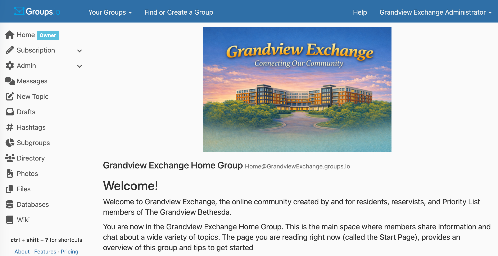
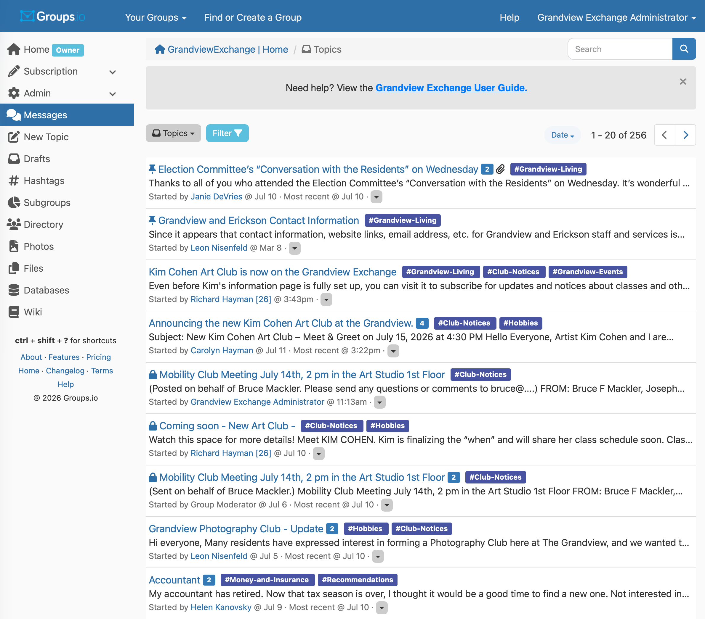

If the page you see looks like the one below, you’re on the Home Page.
This page gives you general information about the group, including a welcome message and links to different sections.
To view and read the group’s messages, you should go to the Messages page. Click or tap Messages on the left side of the page.
If you don’t see the links on the left: your browser window may be too small. Click the three horizontal lines at the bottom‑right corner of the page to open the menu and reveal the list of links.

If the page you see looks like the one below, you’re on the Messages Page. This is where you read messages, post new ones, and reply to others. Below, you’ll find an explanation of each part of the page.

1 2 3 4What's on the Page
- 1 Navigation Sidebar Menu
- [Placeholder Description: This panel handles quick link connections traversing back home, checking subscription profiles, or opening drafts and wiki archives.]
- 2 Message Search Filter
- [Placeholder Description: Type contextual tags, room announcements, or resident names here to surface historic board items.]
- 3 Topics & Sorting Controls
- [Placeholder Description: Allows users to sort topics by latest update timelines or filter specific subcategories dynamically.]
- 4 Main Stream Topic Block
- [Placeholder Description: Interactive heading line showing recent updates, community comment counts, and category tags.]